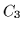
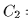

We consider only discourses that depend on `but', `so', `because', overtly. We will treat them as intersentential relevance markers.
The first example
We now present our first example.3
D1 = There are roses and tulips. But the roses are not yellow
Step
0 ctxt( [], 0),ut( 'There are roses and tulips')
Let c1 = [].4
1 c1, parse(and(exists(x,R(x)),exists(y,T( y))))
This is the result of parsing the utterance and inheriting the previous context.
2 c1, update([c1,exists(x,R(x)),PLUS,exists(y,T(y)),PLUS])
update is the result of applying Heim's rules recursively to the parsed utterance. Note that this is in postfix form, however.
3 c1, update([c2,exists(y,T(y)),PLUS])
where c2 = [assert(exists(x,R(x)))]
The first operation is (c1,exists(x,R(x)),PLUS). We just assert the new atom into the context.
4 c1,update(c3)
where c3 = c2  assert(exists(y,T(y)))
We assert the second part of the utterance into the context too.
7 c3
At the end of processing the first utterance, the context contains the assertions that there are both roses and tulips in the discourse context. We now add the next utterance.
8 c3, ut('But the roses are not yellow')
9 c3, parse(and(but,not(and(dfnt(R(z)),Y( z)))))
The new utterance has been parsed and we now need to incorporate it into the context.
10 c3, update(c3,but,PLUS,c3,but,PLUS,dfnt(R(z)),PLUS,Y(z), PLUS, SLASH])
12 c3,update(c4,c4,dfnt(R(z)),PLUS,Y(z),PLUS,SLASH])
where c4 = c3 assert(but)
Now we have to add ``the roses'' to the context. We search in the context for roses that were previously mentioned the closest to the present time--i.e., a mention of roses closest to the tail of the list.
13 c3,update(c4,c5,Y(z),PLUS,SLASH)
where c5 = c4 assert(x=z)
We have in fact mentioned roses before, and we make the new mention of roses designate the same roses as the previous mention by asserting x=z.
14 c3, update(c4, c6,SLASH)
where c6 = c5 Y(z)
15 c3, update(c4 not(and(assert(x=z),assert(Y(z))))
Set difference between the two contexts is done by adding to the first context the negation of the elements in the second context but not in the first.
Here we have a choice of what to negate: either that x=z or that z are yellow, or both. It is at this point that we make appeal to rhetorical information in but to help us make the best choice. If we make the right choice here, which seems to be not to doubt that the roses mentioned in the second utterance are the same roses mentioned in the first, we get eventually:
ctxt([assert(exists(x,R(x))),assert(exists(y,T(y))), assert(but),not(and(assert(x=z),assert(Y(z))),
assert(not(Y(z))),assert(x=z).
We could of course have made a bad choice here. Had that happened, it could have led to a contradiction later on in the discourse and the choice we made at this point would then be questioned.
A second example
We now show an example of active logic using the rules and predicates discussed above to a garden path sentence. This is essentially D7.
D9 = John bought flowers, [Are the roses in the fridge?], No, (the roses are not in the fridge), Because there were no roses
Here we have a case where something is first added to the discourse context only to be promptly removed. As presented in [#!heim:projection_problem!#], the CCP rules cannot deal with this discourse. The last sentence would simply produce a null set of possible worlds, making anything that followed "felicitous."
To save space we will consider only the shortened discourse D7:
D7 = The roses are not in the fridge. Because there are no roses.
Step
0 ctxt( [],0) ut( 'The roses are not in the fridge')
Let c1 = [].
1 c1, parse(not(and(dfnt(R(x)),dfnt(F(y)),in(x, y))))
This is the result of parsing the utterance and inheriting the previous context.
2 c1, update([c1, c1,dfnt(R(x)),PLUS,dfnt(F(y)), PLUS, in( x,y), PLUS, SLASH])
We get the update predicate by applying Heim's rules as before.
3 c1, update([c2,c2,dfnt(F(y)),PLUS,in( x,y),PLUS,SLASH])
where c2 = [presup(exists(x,R(x)))]
The first operation is (c2, dfnt(F(y)), PLUS). Since we have a definite descriptor, we first search the previous context (c1) for a previous mention of roses. As there is none, we accomodate (globally) the context with the presupposition that there are roses.
4 c1, update([c3, c3,in(x,y),PLUS,SLASH])
where c3= [presup(exists(x,R(x))), presup(exists(y,F(y)))]
Similarly, we accomodate by adding the presupposition that there is a fridge to our context.
5 c1, update([c3, c3 [assert(in(x,y))],SLASH]
We simply assert that the roses are in the fridge. Note that here, only one context is being updated. We do not add the new assertion globally.
6 c1, update([c3 [not(assert(in(x,y)))]])
11 c4, ut('Because there are no roses')
where c4= c3 [not(assert(in(x,y)))] = [presup(exists(x,R(x))), presup(exists(y,F(y))) assert(not(in( x, y)))])
After some processing, we end up with a new context that contains the presuppositions that there are roses and a fridge and that the roses are in the fridge. To this new context, the second utterance is added.
12 c4,parse(and(because,not(exists(z,R(z)))))
We repeat the processing we did above.
13 c4,update(c4,because,PLUS,c4,because,PLUS,exists(Z,R(z)),PLUS,SLASH)
17 c4, update(c5)
where c5= c4 [assert(because), not(assert(exists(z,R(z))))]
We have asserted ``because'' in the context because ``because'' can serve as a clue to picking the right choice among several alternatives we could encounter in later processing.
21 ctxt([presup(exists(x,R(x))),presup(y,F(y)),asssert(not(in(x,y))),assert(because),assert(not(exists(z,R(z))))
We now have a context which presupposes that there are roses and which asserts that there are none.
22 ctxt([SUSPECT(exists(x,R(x))),presup(y,F(y)),asssert(not(in(x,y))),assert(because),SUSPECT(not(exists(z,R(z))))
contra(presup(exists(x,R(x))),assert(not(exists(z,R(z))))]
That contradiction is detected and flagged. The formulae that caused the contradiction appear at this step flagged as being ``suspect''.
23 ctxt([NULL(exists(x,R(x))),presup(y,F(y)),asssert(not(in(x,y))),assert(because), assert(not(exists(z,R(z))))
Using the fact that one of the contradictands was a presupposition and the other an assertion we conclude that we were mistaken about the presupposition. This is not always the right decision but it is a good heuristic. We make the presupposition that roses exist to be suspect and we reinstate the assertion that roses do not exist (in the discourse context).
24 ctxt([NULL(exists(x,R(x))),presup(y,F(y)),asssert(NULL(in(x,y))),assert(because),assert(not(exists(z,R(z))))
Since we doubt the existence of roses, we doubt the truthfulness of the statement that the roses are in the fridge.
At the end of processing D7, we ``know'' the following:
And this is what we expect to get.